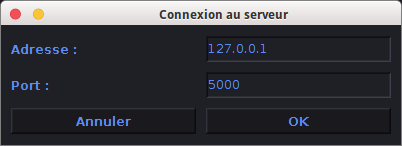

Le programme Arduino Bridge est une application développée en java servant à récupérer l’information provenant de capteurs analogiques branchés sur un arduino, afin de les convertir en messages MIDI et/ou OSC (Open Sound Control : http://opensoundcontrol.org) exploitables par les logiciels compatibles. Il necessite pour pleinement fonctionner une carte Arduino®; Mega2560 ou équivalent, même s’il est possible de préparer et tester des configurations sans carte arduino. Ce document décrit le fonctionnement du programme ainsi que les actions à effectuer pour pouvoir l’utiliser pleinement et dans de bonnes conditions. L’application a été développée et testée sur une machine Linux mais fonctionne aussi sous Mac OS X.10 (non testée sur les version précédentes) et est théoriquement compatible avec les systèmes Windows. Il est necessaire d’avoir installé Java sur votre machine pour pouvoir faire fonctionner ce programme.
Ce programme a été conçu pour fonctionner avec un Arduino®; Mega2560. Cependant, le code arduino (disponible sur le git https://github.com/emilienbai/ArduinoMidiBridge/ ainsi que dans l’archive) peut être adapté en fonction de l’arduino utilisé en modifiant la valeur de la constante nSensors et en l’adaptant au nombre d’entrées analogiques de l’arduino.Il est bien entendu necessaire de téléverser ce code dans l’arduino pour pouvoir utiliser ce logiciel. Les capteurs doivent aussi être correctement branchés sur l’arduino (sortie data sur une entrée analogique de l’arduino).
Pour fonctionner, ce programme a besoin d’utiliser un port midi virtuel. C’est par là que transiteront les messages entre le programme et l’application pilotable en midi. Il est par ailleur necessaire de se connecter à un de ces périphériques midi virtuels pour pouvoir lancer cette application. Il n’est cependant possible de se connecter qu’à un unique périphérique midi par instance de l’application.
Pour créer des ports midi virtuels sur linux, il suffit d’éxécuter la commande suivante dans un terminal : sudo modprobe snd-virmidi snd_index=1. Vous pouvez vérifier la création de ces ports grâce à la commande cat /proc/asound/cards. Vous devriez normalement voir apparaitre une ligne VirMIDI - Virtual MIDI card 1. À partir de la, le programme sera capable de détecter ces ports midi virtuels et de s’y connecter.
Sous Mac OSX, il est possible de créer des ports virtuels midi à partir du menu "configuration audio et MIDI". Ces ports sont ensuite détéctés et peuvent être utilisés par le logiciel. Arduino Bridge est capable de détecter les BUS virtuels IAC créés par MacOS. Il est important de penser à activer ce Bus IAC pour pouvoir s’y connecter.
Le logiciel LoopMIDI téléchargeable gratuitement sur internet permet de créer les ports virtuels midi necessaire au fonctionnement de ce logiciel sous Windows. Cette solution n’a pas encore été testée.
À l’ouverture de ce programme, il est demandé de choisir le mode de reception des informations pour cette session de l’application.
Il est possible de se connecter directement à l’Arduino®; en selectionnant le port de communication utilisé. Sur Linux et Mac OS, les ports de communications utilisables pour communiquer avec l’arduino sont automatiquement listés. Pour windows, il faut completer le numéro du port COM à utiliser. Le port sélectionné est le même que celui utilisé par l’arduino IDE. On valide cette connexion en cliquant sur le bouton "Valider".
Si la carte arduino est branchée à un autre ordinateur utilisant lui même l’application, il est alors possible d’établir une connection en réseau local entre l’ordinateur "serveur" (celui connecté à l’arduino) et l’ordinateur client. Pour cela, il faut renseigner l’adresse IP du serveur ainsi que le port de communication à utiliser pour communiquer entre ordinateurs.

Du coté serveur, il faut activer grâce à une option de la barre de menu le support serveur. Dans cette fenêtre d’activation du serveur, on retrouve l’adresse IP ainsi que le port de communication utilisé.
La connexion client serveur peut aussi servir à communiquer sur plusieurs ports midi de la même machine simultanément. Pour cela, il suffit de connecter le client à sa propre adresse IP.
Dans le cas où vous n’avez pas d’Arduino sous la main et qu’il n’y a pas de serveur lancé, il est
possible de lancer l’application en "mode edition" ou aucune information provenant de l’extérieur
ne sera reçu.
Il faut aussi sélectionner le périphérique midi virtuel à utiliser parmis la liste des périphériques utilisables. À defaut de périphérique virtuel existant, il est toujours possible de se connecter à Gervill, le synthétiseur midi par défaut de Java.
Le panneau situé en haut de l’interface permet la gestion de certains paramètres de l’arduino. Il n’est accesible que si l’application est connectée à l’arduino.
Dans la partie gauche, on peut gérer chaque capteur indépendemment et ainsi, voir son état (actif/inactif), régler son temps de stabilisation qui est l’intervalle de temp minimum entre deux lecture de valeurs du capteur. Plus cette valeur est faible, plus les lectures auront lieu souvent au risque de surcharger le port série d’information et d’introduire une forte latence. Au contraire, si cette valeur est trop élevée, l’arduino est succeptible d’ignorer certaines modifications de valeurs. Il est aussi possible de régler une valeur de seuil propre à l’entrée de l’arduino. Ce paramètre donne une valeur minimale en dessous de laquelle le signal ne sera pas transmit (comme une noise gate). Elle permet d’éliminer les signaux parasites faible pouvant exister sur le capteur. Enfin, il est possible d’initialiser une séquence de calibration pendant laquelle, sur un temps indiqué en haut à droite de la fenêtre, l’arduino va lire les valeurs du capteur et se servir du maximum pour éliminer le bruit et redistribuer les valeurs du capteur sur l’ensemble de l’intervalle nous intéressant. Tous ces paramêtres sont aussi applicables à l’ensemble des capteurs simultanément grâce à la partie droite de la fenêtre. Enfin, en haut à droite se situe un écran de logs ou il est possible de vérifier que l’arduino a bien reçu et traité les demandes qui lui ont été faites.
Pour maximiser les performances, il est conseillé d’adapter le nombre d’entrées de l’arduino actif au nombre d’entrée réellement utilisées et de brancher les capteurs dans l’ordre des entrées analogiques de l’arduino : lorsque seulement 5 entrée sont actives, seules les entrées A0, A1, A2, A3, et A4 seront lues.
Pour ajouter une piste midi, il faut cliquer sur le bouton "Ajouter un capteur" lorsque l’onglet "MIDI" est selectionné. Il faut alors completer les informations concernant notre piste dans la fenêtre qui apparait en attribuant au capteur un nom, un canal arduino d’entrée ainsi qu’un port MIDI.
On valide l’ajout de ce capteur en cliquant sur le bouton OK : il est alors demandé d’attribuer une touche à cette piste, touche permettant de faire envoyer à la piste une impulsion sur le port midi concerné. Chaque piste possède plusieurs attributs et réglages qui leur sont propre :
In : Il s’agit d’un pseudo vu mètre représentant le niveau d’entrée du canal arduino correspondant. Il permet de visualiser l’intensité du signal entrant.
Préamplification : Il s’agit plutôt d’un rapport de multiplication du signal. Il est réglable grâce au slider ou en entrant la valeur manuellement. Pour être accéptée, la saisie doit être validée en appuyant sur la touche Entrée.
Min : Il s’agit de la valeur minimale du message midi envoyé. La saisie est validé avec la touche Entrée ou en cliquant sur n’import quel autre composant. Cette valeur n’est réglable uniquement en mode Fader.
Max : Il s’agit de la valeur maximale du message midi envoyé. La saisie est validé avec la touche Entrée ou en cliquant sur n’import quel autre composant. Cette valeur n’est réglable uniquement en mode Fader.
Debounce : À la place du réglage de la valeur sortante minimale il apparait en mode Momentary ou Toggle un paramètre Debounce. Il est indépendant du debounce de l’arduino mais reste cohérent avec : si l’arduino est paramétré pour n’envoyer les valeurs que toutes les 200ms, regler le debounce d’une piste à une valeur inférieure à 200ms ne permettra pas de raffraichir cette piste plus régulièrement. À l’inverse, si le debounce de la piste est de 400ms , les envois intermédiaires de l’arduino ne seront pas pris en compte. Ce choix de conception est fait pour permettre à un fader d’avoir une restititution au plus proche de la lecture du capteur tout en filtrant des pics d’intensité pour les lignes se comportant comme des boutons.
Seuil : Comme pour le Debounce, ce réglage n’est possible que pour les modes Momentary ou Toggle. Il est dans la même logique que le paramètre précédent indépendant mais cohérent avec les réglages d’entrée de l’arduino.
Out : Il s’agit du niveau de sortie de la derniere note MIDI envoyée. Elle se place sur une echelle de 1 à 127.
Bouton Mute : Cliquer sur ce bouton permet de muter la piste correspondante, c’est à dire que cela permet de ne plus envoyer de message avec cette piste de façon temporaire.
Bouton Solo : Cliquer sur le bouton solo d’une piste permet de l’isoler des autres et de ne plus emmettre des notes que par les pistes solo. Cependant, une piste solo peut ne pas emmettre de note si le bouton Mute All est activé. Si la piste est "muté", le solo surpasse le mute.
Bouton Test : Ce bouton émet une note MIDI à l’intensité maximale pendant une demi seconde. Il permet de "mapper" une piste à un effet. Il surpasse les conditions de Mute ou de Solo. Le même effet est accessible grace aux raccourcis clavier des pistes.
Bouton Mode : Ce bouton permet de selectionner un mode d’action de la piste midi. pour le MIDI, il existe 3 modes d’action :
Bouton Supprimer : Ce bouton permet de supprimer la piste sélectionnée.
Pour pouvoir envoyer des messages OSC grâce à ArduinoBridge, il est d’abord nécessaire d’activer le serveur OSC (Menu Edition->Paramètres OSC). Il faut renseigner l’adresse IP du destinataire ainsi que le port d’envoi à utiliser.
Une fois le serveur en marche, il est alors possible de selectionner l’onglet OSC et d’ajouter des pistes OSC grâce au bouton "Ajouter un capteur" situé en bas à droite de la fenêtre. Dans la fenêtre qui apparait, il faut alors choisir un nom pour la piste OSC, l’entrée arduino correspondante et l’adresse à laquelle le message sera envoyé. Enfin, il faut selectionner le mode d’action parmis "Fader", "Toggle", "Momentary" ou "Alternate". Le mode alternate est un mode ou les messages osc sont envoyés alternativement à 2 adresses différentes (/play, /pause par exemple).
La création de la piste est validée en cliquant sur le bouton OK. La piste OSC est similaire en tout point à la piste midi à l’exception du mode qui ne peut être changé une fois la création effectuée (une adresse ayant plus de sens qu’un port midi et par conséquent un usage plus spécifique) et l’absence de raccourci clavier pour l’envoi de messages test (l’adresse à laquelle est envoyé le message etant déjà correctement "mappée") .